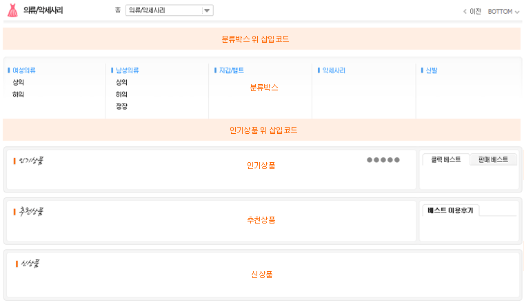

01. 분류선택 : 분류를 선택 하시면 됩니다. 분류를 선택 하시면 아래에 분류상품관리와 분류디자인관리가 나타 납니다.
02. 분류상품관리
A. 인기상품 : 분류페이지 인기상품 진열을 설정 하시면 됩니다. 사용하실경우 상품이동형, 상품그룹이동형 중 원하시는 형태를 선택 하시고 진열 갯수를 선택 하시면 됩니다.
B. 추천상품 : 분류페이지 추천상품 진열을 설정 하시면 됩니다. 사용하실경우 상품이동형, 상품그룹이동형 중 원하시는 형태를 선택 하시고 진열 갯수를 선택 하시면 됩니다.
C. 신상품 : 분류페이지 신상품 진열을 설정 하시면 됩니다. 사용하실경우 리스트형, 상품이동형, 상품그룹이동형 중 원하시는 형태를 선택 하시고 진열 갯수를 선택 하시면 됩니다.
! 분류상품관리는 하위분류가 있는 경우에만 나타 납니다.
03. 분류디스플레이관리
A. 분류박스 위 삽입코드 : 분류박스 위에 나타날 디자인을 꾸미시면 됩니다. 사용하지 않을 경우 사용안함을 선택 하시면 됩니다.
B. 인기상품 위 삽입코드 : 인기상품 위에 나타날 디자인을 꾸미시면 됩니다. 사용하지 않을 경우 사용안함을 선택 하시면 됩니다.
